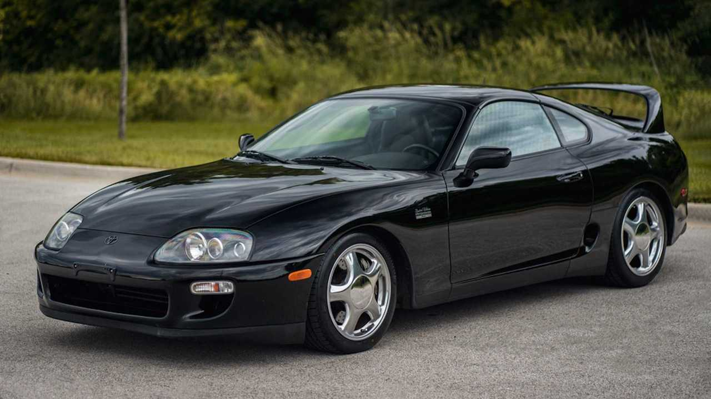
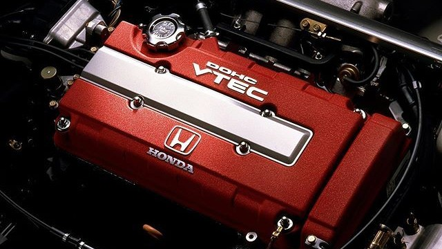
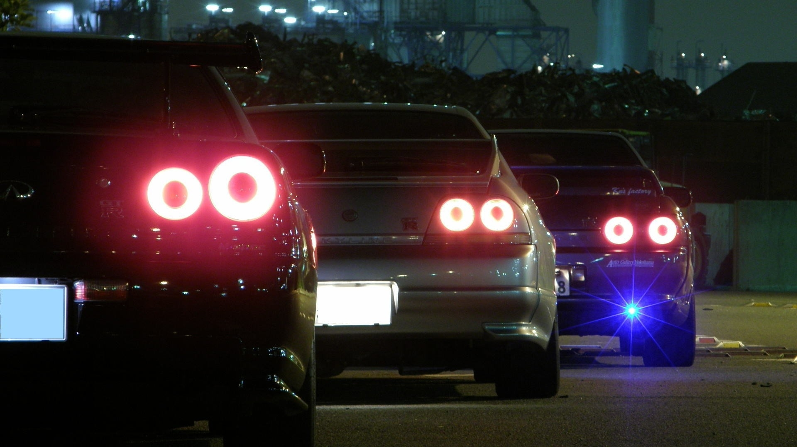

Evolución de los Deportivos JDM

Artículo sobre la era dorada de los motores turboalimentados japoneses.
Leer el artículo sobre deportivos JDMEste sitio web está dedicado a analizar automóviles deportivos icónicos producidos entre 1980 y 2000, tales como el Toyota Supra, Nissan Skyline GT-R y Mitsubishi Eclipse.

Artículo sobre la era dorada de los motores turboalimentados japoneses.
Leer el artículo sobre deportivos JDM
Consulta la tabla de datos detallada sobre potencia, motorización y aceleración.
Ver la tabla comparativa de rendimiento
Galería interactiva sobre los JDM.
Acceder a la galería multimedia